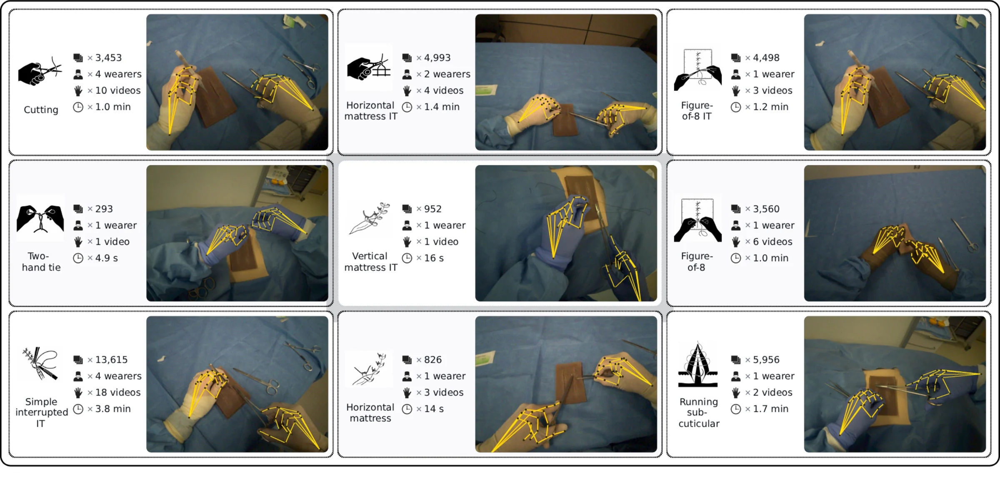
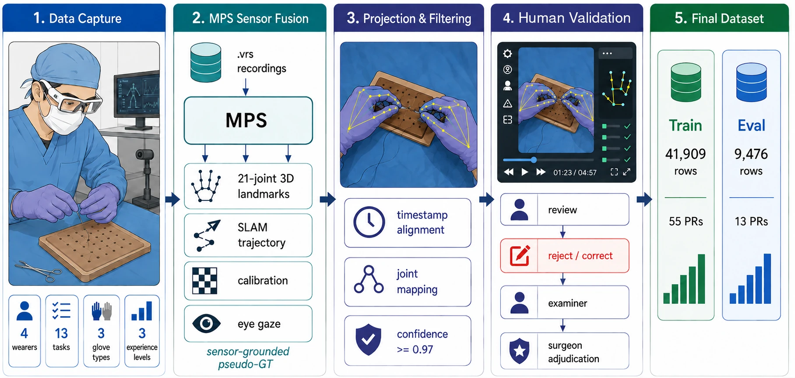
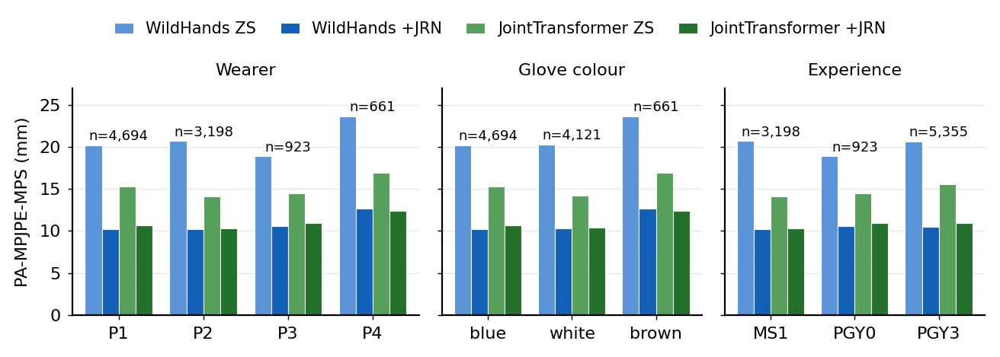
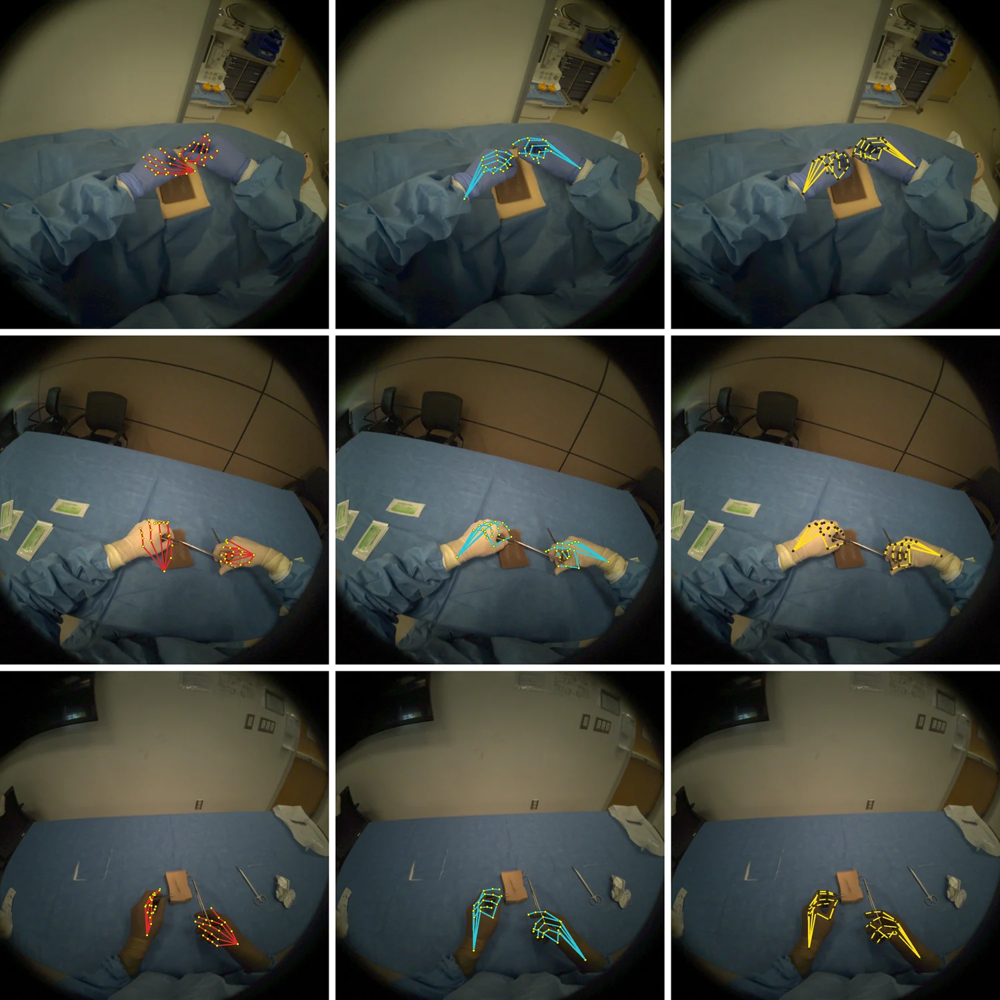
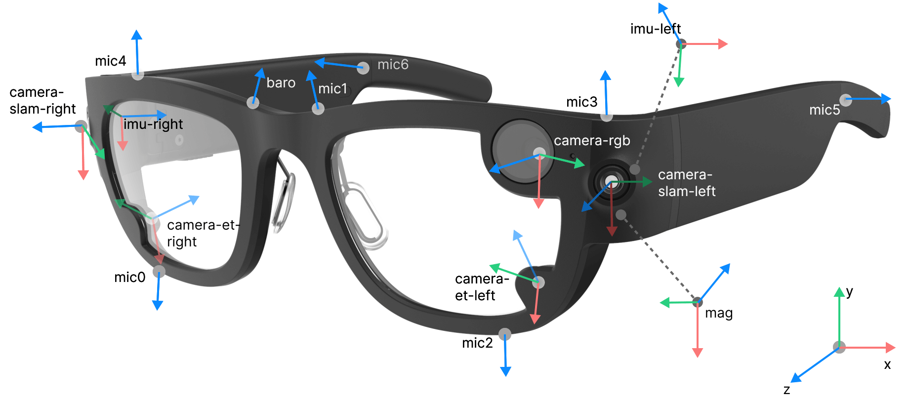
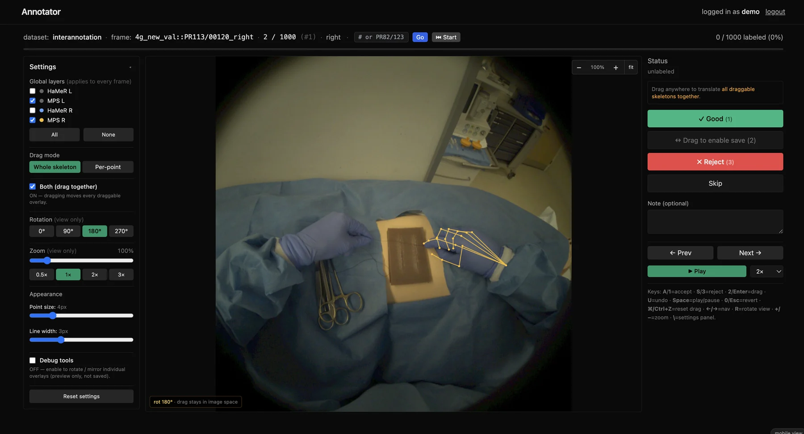
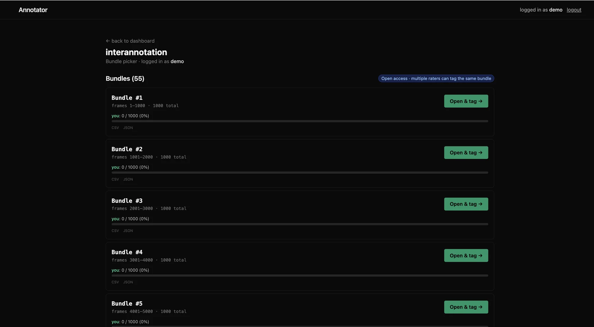

EgoSurgHands
An Egocentric 3D Hand Pose Dataset & Benchmark for Open-Surgery Training
TL;DRTo our knowledge, the first benchmark for real-captured egocentric 3D hand pose in open-surgery training: 51,385 hand instances recorded with Project Aria glasses, human-validated evaluation labels, and eight hand-pose methods tested zero-shot.
Abstract
We introduce EgoSurgHands, an egocentric 3D hand-pose dataset and benchmark for open-surgery training tasks captured with Meta Project Aria glasses on standard surgical training pads. To our knowledge, EgoSurgHands is the first benchmark for real-captured egocentric hand pose estimation in open-surgery training on synthetic pads. It contains 41,909 training hand-instance rows across 55 procedure recordings and 9,476 human-validated evaluation rows across 13 held-out procedure recordings from 4 wearers at a single site over two recording days, spanning 13 distinct tasks, 3 glove colors, and 3 stages of training. Each frame includes Aria intrinsics, MPS (Machine Perception Services) hand landmarks with per-hand confidence, timestamps, and eye gaze, plus SLAM extrinsics for the 35 of 68 recordings where SLAM succeeded. The primary benchmark uses sensor-fused, human-validated pseudo-ground truth: evaluation labels are derived from Aria MPS and validated through multi-rater human review with senior-surgeon adjudication, and they are not mocap-grade. The original adaptation split is within-corpus (procedure-disjoint, with shared wearers), which we complement with a leave-one-wearer-out evaluation and an external multi-view triangulated validation of the labels. We benchmark eight methods under zero-shot transfer, spanning MANO-based (HaMeR, WiLoR, WildHands, JointTransformer, SimpleHand, MeshGraphormer), two-hand (IntagHand), and keypoint-only (MediaPipe Hands) families. Within the evaluated model panel, backbones pretrained using egocentric data are associated with stronger zero-shot transfer, with JointTransformer achieving the best zero-shot result at 14.95 mm PA-MPJPE, and a substantial surgical-domain gap remains. As a lightweight diagnostic baseline for within-dataset adaptation, a 58K-parameter residual corrector (JRN) on frozen backbones reaches 10.96-14.85 mm PA-MPJPE on held-out wearers for the two ego-pretrained backbones. We release the dataset, benchmark code, checkpoints, and multi-rater annotation framework.
The hands, as the glasses tracked them
Aria RGB video at 30 fps with Meta's MPS 3D hand tracking projected onto every frame: the sensor output the labels are built from. Pick a task below.
Surgical-training hands, from the wearer's point of view
Four medical trainees, from a first-year medical student to a third-year resident, wore Project Aria glasses while suturing, tying knots and cutting on synthetic skin pads. Meta's Machine Perception Services (MPS) turns each recording into 21-joint 3D hand landmarks, a SLAM trajectory, calibration and eye gaze, and every evaluation frame is then checked by people.


What each frame includes
- Egocentric RGB1408 × 1408 fisheye frames from the Aria RGB camera.
- 3D hand pose21-joint MPS landmarks per hand, per-hand confidence and a hand bounding box.
- Camera geometryPer-frame intrinsics, plus SLAM trajectories for the 35 of 68 recordings where SLAM succeeded.
- Eye gazeAria eye-gaze estimates alongside every frame.
- MetadataWearer, task, glove colour, experience tier and recording day.
- DocumentationCroissant 1.1 metadata with Responsible AI fields, and a Gebru-template datasheet.
- Wearers
- 4, de-identified as P1 to P4; one left-hand dominant
- Stages
- MS1, PGY0 and PGY3
- Gloves
- blue, white and brown
- Setting
- one site, two recording days, synthetic skin pads; no patients
- Kit
- needle drivers, toothed forceps, Metzenbaum and suture scissors; vicryl, silk and nylon sutures
- Capture
- RGB at 30 fps, frames released at 5 Hz (every 6th frame)
from datasets import load_dataset ds = load_dataset("aaditya/EgoSurgHands") # splits: train, validation (request access on the dataset page, then huggingface-cli login)
Eight hand-pose methods, zero-shot
None of the methods sees surgical data during training. Each is scored against the human-validated labels of the 9,476 evaluation hand instances, on 20 joints, with 95% confidence intervals from a bootstrap over the 13 held-out recordings.
The shaded band marks the benchmark's roughly 1 cm label resolution (5 to 13 mm). † MediaPipe Hands is scored on the 24.1% of evaluation rows where it detects a hand.
Egocentric pretraining transfers best
JointTransformer has the lowest zero-shot error, 14.95 mm. WildHands, which shares HaMeR's architecture but adds egocentric training data, lowers HaMeR's 24.99 mm to 20.48 mm.
A surgical domain gap remains
Zero-shot errors span 15 to 30 mm, well above the roughly 1 cm label resolution. In the qualitative examples, WildHands predicts an open-hand template that misses the surgical grip.
Gains hold for unseen wearers
With each wearer held out in turn, the JRN adapter improves the held-out wearer in 19 of 20 backbone and wearer pairs.
All five metrics
Zero-shot / with JRN · mm, except PA-P2D in px| PA-MPJPE | MPJPE-RR | Root error | MPJPE-abs | PA-P2D (px) | ||||||
|---|---|---|---|---|---|---|---|---|---|---|
| Method | ZS | +JRN | ZS | +JRN | ZS | +JRN | ZS | +JRN | ZS | +JRN |
| Egocentric pretraining | ||||||||||
| JointTransformer | 14.95 | 10.70 | 133.7 | 40.8 | 355.5 | 75.4 | 352.7 | 79.0 | 27.7 | 19.6 |
| WildHands | 20.48 | 10.40 | 133.3 | 40.1 | 550.4 | 73.8 | 533.3 | 75.8 | 38.6 | 19.0 |
| Non-egocentric | ||||||||||
| HaMeR | 24.99 | 16.11 | 157.7 | 50.7 | 313.8 | 105.6 | 365.0 | 91.7 | 42.8 | 29.4 |
| WiLoR | 25.34 | 15.91 | 151.4 | 51.1 | 314.0 | 102.8 | 369.9 | 88.0 | 44.3 | 28.9 |
| MeshGraphormer | 26.22 | 15.12 | 151.4 | 51.9 | 344.9 | 106.1 | 400.5 | 96.1 | 47.5 | 27.5 |
| SimpleHand | 28.59 | 21.10 | 137.8 | 69.5 | 324.0 | 141.4 | 356.1 | 109.8 | 53.4 | 39.1 |
| Two-hand and keypoint-only | ||||||||||
| IntagHand | 20.28 | 13.94 | 157.9 | 50.8 | 322.5 | 92.5 | 363.4 | 90.5 | 37.9 | 25.5 |
| MediaPipe Hands† | 30.45 | 18.05 | 122.9 | 63.3 | 328.6 | 121.4 | 386.1 | 94.9 | 47.5 | 29.7 |
Errors against the Aria MPS labels on the OP_VALID 20-joint subset; PA metrics use Umeyama Procrustes; PA-P2D uses the Aria pinhole approximation (f = 606.5, c = 704). Bold: best zero-shot PA-MPJPE and best value in each +JRN column. † MediaPipe errors are on the 24.1% of evaluation rows where it detects a hand (2,283 of 9,476); its JRN is trained on the 11,349 training rows where it detects one.
About JRN. JRN is a 58K-parameter residual corrector, trained on the training split with the same recipe for every method. It is a diagnostic baseline for adapting a frozen model to the MPS labels. Corrected models sit at the roughly 1 cm label resolution, so differences among them are not resolvable: compare methods on the zero-shot results.
Leave one wearer out
The original split keeps procedures apart but shares wearers. Here each wearer is held out in turn: JRN is retrained on the other three wearers' training rows, and the backbones stay zero-shot.
| Backbone | P1 (n = 4,694) | P2 (3,198) | P3 (923) | P4, brown gloves (661) |
|---|---|---|---|---|
| JointTransformer | 15.32→12.65 | 14.13→11.30 | 14.48→11.45 | 16.94→14.85 |
| WildHands | 20.21→12.00 | 20.68→14.25 | 18.89→10.96 | 23.64→14.68 |
| HaMeR | 25.64→17.59 | 24.26→18.37 | 23.06→14.92 | 26.58→27.71* |
| MeshGraphormer | 24.25→17.70 | 27.59→17.31 | 27.00→14.30 | 32.56→15.84 |
| SimpleHand | 27.54→21.47 | 29.67→22.57 | 27.00→21.36 | 33.06→21.29 |
PA-MPJPE in mm, zero-shot → with JRN, on the held-out wearer. * The only cell where JRN does not improve the held-out wearer. P4, who wore all the brown gloves, is the hardest zero-shot fold for every backbone, and the two egocentric backbones reach 10.96 to 14.85 mm without having seen the evaluation wearer.

How good are the labels?
The labels are sensor-fused pseudo-ground truth, not motion capture. Three independent checks put their resolution at about one centimetre.
Human corrections
Raters reviewed all 9,476 evaluation frames: 43.1% were accepted as-is, 51.9% were drag-corrected and 5.1% were rejected. Among corrected frames, the median correction is 8.2 mm.
Model consensus
The consensus of independently trained backbone panels sits 11.7 to 13.2 mm from MPS, stable across panel variants and when any one backbone is left out.
External triangulation
Two GoPros and an overhead iPhone, calibrated as one metric rig with a ChArUco board, recorded the tasks alongside the Aria glasses. Over 500 frames from 17 recordings, the median per-joint deviation from MPS is 15.9 mm (95% CI 14.7 to 17.5), and 9.8 mm after per-hand alignment. It includes reference error, so it bounds MPS error from above.
What this means. A resolution of about 1 cm is fine enough to compare methods zero-shot, where errors span 15 to 30 mm, but not to rank models after JRN correction, whose errors fall inside it.
Qualitative results

Inside the glasses
Every recording comes from Meta's Project Aria research-edition glasses. The RGB camera supplies the frames; Meta's Machine Perception Services turns each session into the 3D hands. Hover a glowing sensor.

- RGB camera1408 × 1408 video through a fisheye lens at 30 fps. Frames are released at 5 Hz (every 6th frame); 2D labels use a pinhole approximation (f = 606.5, c = 704).
- Two SLAM camerasMonochrome cameras on either side of the frame, alongside eye tracking, audio and IMUs.
- Machine Perception ServicesEach session goes to Meta MPS, which returns the SLAM trajectory, 21-joint hand landmarks at 30 Hz, eye-gaze direction and a semi-dense point cloud.
Diagram: Project Aria documentation (projectaria_tools, Meta), colours inverted in the dark theme.
Multi-rater annotation tool
Evaluation frames were reviewed in a browser-based tool. Raters toggle every skeleton overlay, accept, drag-correct or reject each frame, and leave notes. Frames come in bundles of 1,000 that several raters can open independently, which supports the agreement audit.


Limitations
- Four wearers at one site over two days, on synthetic pads rather than in a live operating room.
- Labels are human-validated pseudo-ground truth, not mocap-grade, and cannot resolve sub-centimetre differences such as those among JRN-corrected models.
- The original split shares wearers and days; the leave-one-wearer-out protocol addresses this for JRN.
- All brown-glove frames come from one wearer, so glove colour and wearer are confounded for that stratum.
Frequently asked
Was this recorded during real surgery?
No. Every recording is a surgical-training task on a synthetic skin pad with a standard suturing kit, at one site over two recording days. There are no patients and no protected health information.
How do I get the data?
Request access on the Hugging Face dataset page; requests are reviewed by hand. Once approved, log in with huggingface-cli login and load it with the datasets library, as in the snippet in the Dataset section.
What licence does it use?
CC BY-NC-SA 4.0: free for non-commercial use with attribution, and anything derived from it must be shared under the same licence.
How accurate are the labels?
They are sensor-fused pseudo-ground truth, not motion capture. Human corrections, model consensus and an external triangulated rig all put their resolution at about 1 cm. That is fine enough to compare methods zero-shot, where errors span 15 to 30 mm, but not to rank models after JRN correction.
Who are the wearers?
Four medical trainees, de-identified as P1 to P4: a first-year medical student (MS1), a PGY0 and two PGY3 residents. One of them is left-hand dominant.
What are the videos at the top of this page?
Raw Aria RGB footage from the recordings, undistorted to the dataset's pinhole camera, with Meta's MPS 3D hand landmarks projected onto every frame at 30 fps (left hand blue, right hand green). The dataset itself releases every 6th frame with the labels described above.
Get the data and code
Dataset
Frames, 3D hand labels, calibration, eye gaze and metadata, with Croissant metadata and a datasheet.
Benchmark code
Zero-shot evaluation of the six MANO-based backbones, JRN training and evaluation, and PA-P2D.
Coming next
- ○IntagHand and MediaPipe Hands evaluation
- ○Leave-one-wearer-out protocol
- ○JRN checkpoints
- ○Multi-rater annotation tool
BibTeX
@inproceedings{pal2026egosurghands,
title = {EgoSurgHands: An Egocentric 3D Hand Pose Dataset \& Benchmark
for Open-Surgery Training},
author = {Pal, Ankit and Kugener, Guillaume and Volpi, Sofia and
Schwartz, Joshua and Idarraga, Alex and Rajpurkar, Pranav and
Brat, Gabriel A.},
booktitle = {Advances in Neural Information Processing Systems (NeurIPS),
Evaluations and Datasets Track},
year = {2026}
}